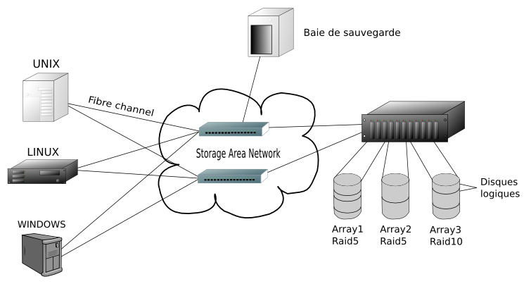

Redes de area de almacenamiento (SAN)
Una SAN es una red dedicada, de alto rendimiento, que se utiliza para trasladar datos entre servidores y recursos de almacenamiento. Al tratarse de una red separada y dedicada, evita todo conflicto de tráfico entre clientes y servidores.
La tecnología SAN permite conectividad de alta velocidad, de servidor a almacenamiento, almacenamiento a almacenamiento, o servidor a servidor. Este método usa una infraestructura de red por separado, evitando así cualquier problema asociado con la conectividad de las redes existentes.

Las SAN poseen las siguientes características:
- Rendimiento: Las SAN permiten el acceso concurrente de matrices de disco por dos o más servidores a alta velocidad, proporcionando un mejor rendimiento del sistema.
- Disponibilidad: Las SAN tienen una tolerancia incorporada a los desastres, ya que se pueden hacer copias exactas de los datos.
- Escalabilidad: Al igual que una LAN/WAN, puede usar una amplia gama de tecnologías. Esto permite la fácil reubicación de datos de copia de seguridad, operaciones, migración de archivos, y duplicación de datos entre sistemas.
BÚSQUEDAS RELACIONADAS
Redes de area amplia (WAN)
Redes de area metropolitana (MAN)
Red privada virtual (VPN)